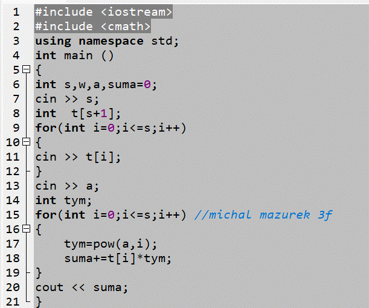

Zadanie 3 kod obliczajacy wartosc wielomianu dla podanego stopnia wspołczynnikow i argumentu
Grafika ilustrująca program

Algorytm pozwala szybko i prosto obliczyc wielomiany dowolnego stopnia
Program służy do obliczania wartości wielomianu. Na początku użytkownik podaje
stopień wielomianu oraz jego współczynniki, które są zapisywane w tablicy.
Następnie wprowadzana jest wartość zmiennej a, dla której obliczana jest
wartość wielomianu. Program wykorzystuje potęgowanie oraz pętlę, aby policzyć
kolejne składniki wielomianu i zsumować je w jednej zmiennej. Na końcu wynik
obliczeń zostaje wyświetlony na ekranie.